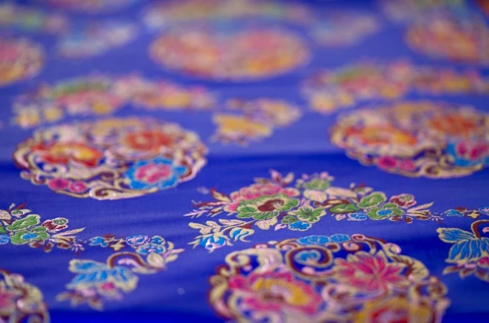
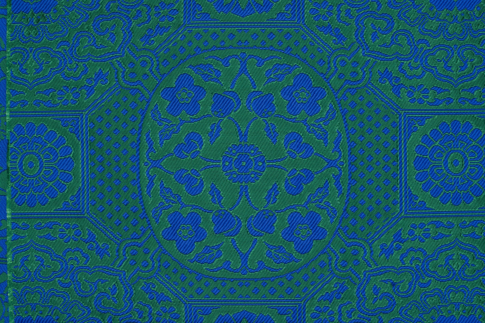
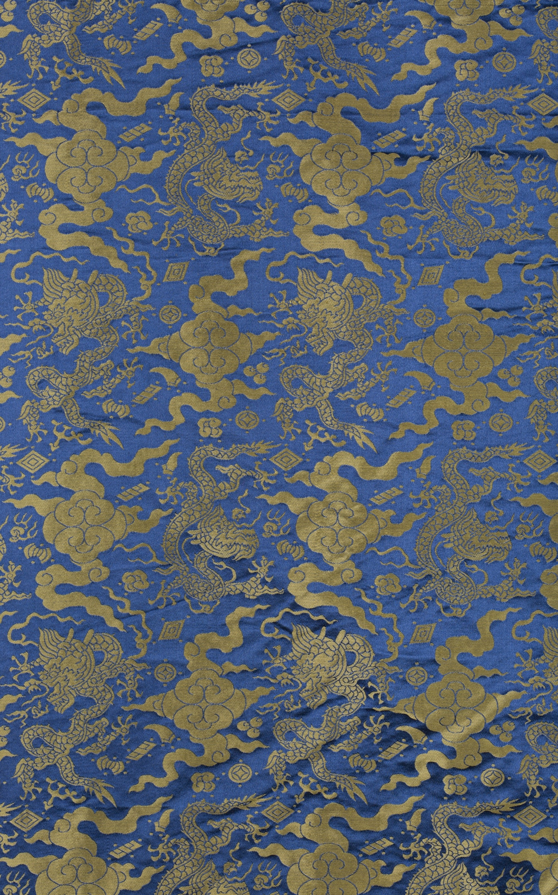
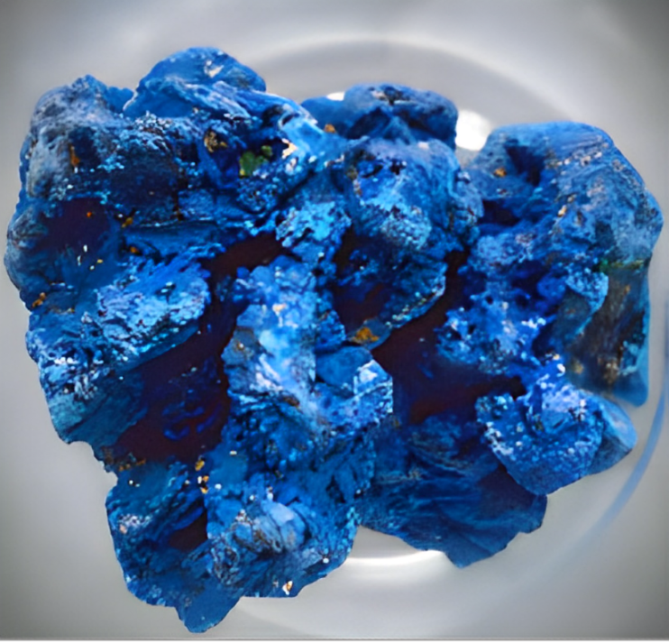
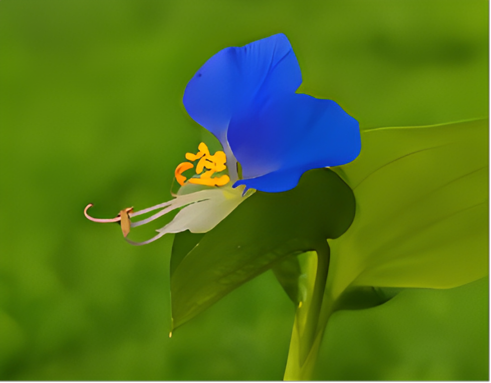
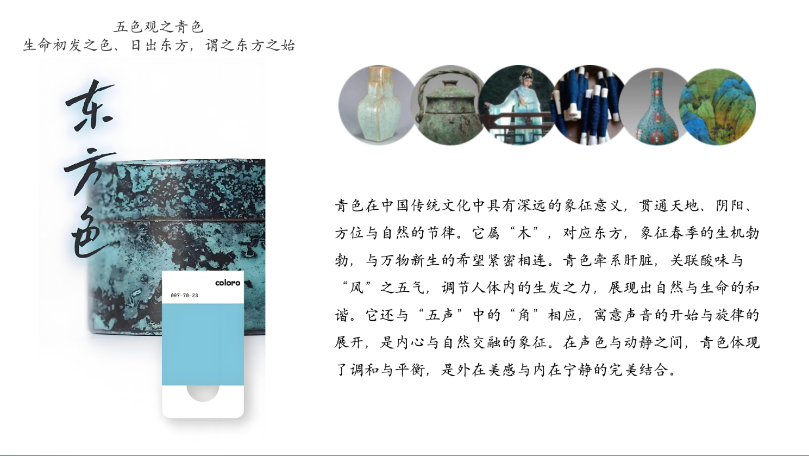

藏于江南丝绸文化博物馆

蓝地织金大叶牡丹妆花缎
藏于江南丝绸文化博物馆
藏于江南丝绸文化博物馆

蓝地天华锦
藏于江南丝绸文化博物馆
藏于江南丝绸文化博物馆

蓝地八宝云龙库缎
藏于江南丝绸文化博物馆
藏于江南丝绸文化博物馆
| 名称 | 别名 | 类型 | 主要化学成分 |
|---|---|---|---|
| 蓝靛草 | 蓼蓝、苋蓝 | 蓼科，一年生草本植物 | 碱性碳酸铜[CuCO3·Cu(OH)2] |
| 石青 | 大青、扁青 | 天然矿石 | 碱性碳酸铜[2CuCO3·Cu(OH)2] |
| 鸭跖草 | 碧竹子、蓝花草 | 鸭跖草 |

蓝靛草
蓝靛草（Isatis tinctoria）是一种十字花科植物，是传统天然靛蓝染料的重要来源。其叶片含有靛甙，通过发酵和还原处理可提取靛蓝染料，用于染制布料、丝绸和云锦等传统织物，为织品赋予持久鲜艳的蓝色。蓝靛草在中医学中也具有清热解毒的功效，是制作板蓝根冲剂的主要原料，广泛用于治疗咽喉肿痛等症。作为染料和药用植物，蓝靛草不仅推动了中国传统纺织工艺的发展，还体现了古人对自然资源的巧妙利用。
石青
石青是一种传统矿物颜料，主要由含铜的矿石如蓝铜矿（Azurite）磨制而成，呈现鲜艳的蓝色，是中国古代绘画和工艺美术的重要颜料之一。石青颗粒细腻、色泽稳定，广泛应用于壁画、唐卡、书画以及云锦的织造工艺中，为织品和艺术品增添深沉华美的色彩效果。由于其天然矿物特性，石青具备良好的耐光性和持久性，成为中国传统艺术与工艺文化中不可或缺的色彩元素。


鸭跖草
鸭跖草（学名：Commelina communis），是一种常见的草本植物，因其花朵形似鸭子的脚掌而得名。鸭跖草的花朵呈亮蓝色，是天然植物染料的来源之一，常用于染制织物，能够提取出鲜艳的蓝色色素。它还具有一定的药用价值，在中医学中用于清热解毒、消肿止痛。鸭跖草生长广泛，适应力强，是中国传统染色工艺中一种经济实用的染材，同时也为天然蓝色色系的植物染料提供了重要支持。
